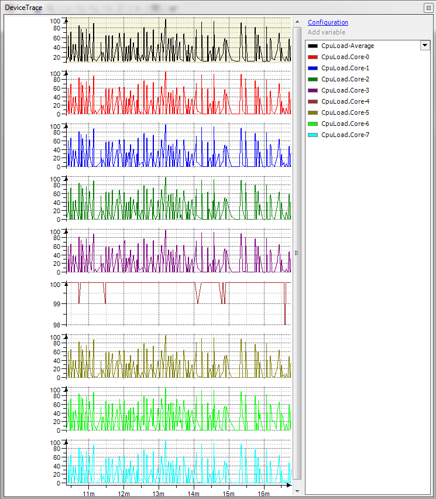

6.3.4. MultiCore Tutorial¶
6.3.4.1. Introduction¶
Controller manufacturers are equipping more an more new hardware with multiple processor cores, known as multi-core CPUs. The subject of this document is the multi-core support for controllers with the CODESYS runtime system.
For multicore targets we assume an SMP system. AMP systems are not assumed here.
These are the main goals for a software running on a multicore system:
Improve Performance
Keep Data Consistency
These aspects are described in detail in the following chapters.
6.3.4.2. MultiCore aspects¶
Performance¶
To improve the performance on multicore systems, there are lot of concepts. Following we describe some main principles.
Task execution on different CPU cores¶
Using at least one task for each CPU core can improve the performance of your software dramatically. So splitting the software execution into several tasks should be aspired. Using several tasks is the most important precondition, that the software can benefit running on a processor with several CPU cores.
The way how tasks are executed on several cores must be recognized here too. This is described in the chapter Task binding.
Avoid global synchronizations¶
If you synchronize the data access gobally between several tasks, you decrease the performance dramatically on a multicore system. So in the following chapters, we describe different synchronization mechanisms for different use cases to improve the performance. The best choice is to use locking free programming. This is described in the following chapter.
Decouple tasks¶
To decouple tasks you can use for example:
Message queues
Asynchronous manager
Both mechanisms are described in the chapter Asynchronous Operations.
Task binding¶
There are 2 different ways how a task is executed on a CPU core:
Operating system decision (free floating / load balancing):
Here the Operating system decides always on which core a task is running at a time. This decision depends typically on the load on the different CPU cores (load balancing), but can be based on different additional characteristics. And so the CPU core can be changed during the runtime of a task or from task cycle to task cycle.
If deterministic tasks (realtime tasks) are running as freefloating, the execution time can vary on which CPU core the task is currently running. So it is more predictably, if the task runs only on one CPU core. This is described following.
Fix bound to a CPU core:
Here a task can be fix bound to a CPU core and so the task only is running in this dedicated CPU core. This could improve the predictability of the execution time of a task, but but this is possibly not true on all targets! But you take away the possibility of the operating system to do a load balancing and so it mus be measured, if a fix binding of a task has a really benefit.
To manage the CPU core configuration of all tasks, typically we assign a task to a so called “task group”. The CPU core binding of a complete task group can be configured or you can bind a single task to one or several cores.
In the runtime system, we assign realtime tasks (scheduler tick and IEC-tasks) fix to one core and all other tasks are running free floating (unbound).
By default we predefine the following task groups:
“System”:
For schedule and system tasks. Fix bound to core 0.
“IEC-Tasks”:
Default taskgroup for all IEC-tasks. They are bound by default to one core (core=1)!
“Communication”:
For all communication tasks we create this task group by default. All tasks in this task group are executed be default free floating.
“Visualization”:
For all visualization tasks in the runtime system. All tasks in this task group are executed be default free floating.
Data Consistency¶
To keep data consistency is not fundamentally new for multi-core targets. It is a general issue even for multitasking systems. However care must be taken that the preservation of data consistency is achieved not without a significant reduction in performance respectively computing power. Therefore we limit data consistency for accessing data up to 8-byte data types because this can be attained without considerable loss of performance, primarily by means of atomic operations.
A generic interface in the runtime system can be used to read/write 2, 4 and 8 byte data values atomic, if your code should run on a 32bit and a 64bit target:
SysCpuReadValueAtomic/SysCpuWriteValueAtomic: Access to an 2, 4 and 8 byte value is atomic
The data consistency in the IEC-program is described in the chapter IEC data consistency.
If “core” or “multi-core” is not mentioned explicitly in the following subchapters, then this is a general issue for multitasking on UP systems too.
32bit systems¶
On 32bit systems, a data consistency for datatypes up to 4 bytes is always given, if the source and destination address for the access are correctly aligned (2 byte datatype on a 2 byte boundary and a 4 byte datatype on a 4 byte boundary).
Access to 8 byte integer and real datatypes (RTS_UI64/RTS_I64 and RTS_LREAL64) are not atomic! So we recommend using always the atomic functions SysCpuReadValueAtomic/SysCpuWriteValueAtomic or for a single 64bit access the following functions in the runtime system to achive data consistency:
SysCpuAtomicReadInt64/SysCpuAtomicWriteInt64: Access to an 64bit integer value is atomic
SysCpuAtomicReadReal64/SysCpuAtomicWriteReal64: Access to an 64bit real value is atomic
On which platforms these atomic functions are implemented is described in chapter Operating system and processor specific aspects.
64bit systems¶
On 64bit systems, a data consistency for datatypes up to 8 bytes is always given, if the source and destination address at the access are correctly aligned (2 byte datatype on a 2 byte boundary, a 4 byte datatype on a 4 byte boundary and a 8 byte datatype on a 8 byte boundary).
6.3.4.3. Licensing¶
The number of CPU cores that are supported for the IEC Tasks are licensed via a device family license in the 3S.dat file!
If the number of licensed cores are less than the physical available CPU cores, the following aspects must be known:
You cannot use all CPU cores for IEC task groups
“Freefloating” option for IEC task groups are not allowed!
You have to specify the really used cores in the following setting:
[SysCpuMultiCore] IecCoreSet={0..MAXCOREID}
Example for a 4 CPU core target but only 2 CPU cores are licensed:
[SysCpuMultiCore] IecCoreSet={0,2}
So only CPU core 0 and 2 can be used for IEC tasks.
6.3.4.4. Operating system and processor specific aspects¶
General¶
At the following Operating Systems the multicore support for the runtime system is prepared:
OS |
Version |
Runtime System MultiCore Support |
|---|---|---|
Windows |
Windows >= Vista |
y |
Windows RTE |
n |
|
Linux |
y 1) 2) |
|
VxWorks |
VxWorks >= 6.9 |
y 1) 2) |
Windows CE |
WindowsCE >= 7.0 |
y 3) |
QNX |
n |
OS specific data consistency¶
The following Operating Systems and its processor-combinations supports read/write atomic to 64bit datatypes on a 32bit Operating System:
OS |
Version |
x86 |
x64 |
Cortex-R / Cortex-A |
ARM |
PPC |
|---|---|---|---|---|---|---|
Windows |
Windows >= Vista |
y |
y |
— |
— |
— |
Windows RTE |
n |
n |
— |
— |
— |
|
Linux |
gcc >= 4.4 |
y |
y |
y |
y |
n |
VxWorks |
VxWorks >= 6.9 |
y |
y |
n |
n |
n |
Windows CE |
WindowsCE 7.0 |
y |
— |
n |
n |
— |
Windows CE |
WindowsCE >= 8.0 |
y |
— |
y |
y |
— |
Legend: y = available, n = not available, — = not supported by the OS
Windows¶
Windows means here the product CODESYSControlWin, _not_ CODESYSControlRTE! CODESYSControlWin can run on PCs with multiple CPU cores, with or without hyperthreading.
x86/x64: all access to 64bit values are consistent and are handled atomic.
Linux¶
On a 32bit Linux, we have the following restrictions on handling 64bit datatypes:
x86/x64/ARM/Cortex: all access to 64bit values are consistent and are handled atomic. gcc >= 4.4 is necessary.
PPC: access is not atomic!
Here you have to use always SysCpuReadValueAtomic/SysCpuWriteValueAtomic repectively SysCpuAtomicReadInt64/SysCpuAtomicWriteInt64 or SysCpuAtomicReadReal64/SysCpuAtomicWriteReal64 in the runtime system! This is still done for monitoring, forcing, etc.
In the IEC application you have to use the AtomicReadXXX or AtomicWriteXXX to handle 64bit values atomic (see chapter IEC data consistency)!
VxWorks¶
On 32bit VxWorks we have the following restrictions on handling 64bit datatypes:
x86/x64: all access to 64bit value are consistent and are handled atomic.
ARM/Cortex/PPC: access is not atomic!
Here you have to use always SysCpuReadValueAtomic/SysCpuWriteValueAtomic repectively SysCpuAtomicReadInt64/SysCpuAtomicWriteInt64 or SysCpuAtomicReadReal64/SysCpuAtomicWriteReal64 in the runtime system! This is still done for monitoring, forcing, etc.
In the IEC application you have to use the AtomicReadXXX or AtomicWriteXXX to handle 64bit values atomic (see chapter IEC data consistency)!
Windows CE¶
Windows CE 7¶
MultiCore support is available under Windows CE 7 ARM and x86. But Windows CE 7 uses the ARM32 instruction set without support of atomic instructions for 64 bit access! So on ARM platforms, atomic handling of 64bit datatypes for data consistency is not supported with an atomic operator!
Windows Embedded Compact 2013 (“CE 8”)¶
MultiCore support is available under Windows CE 8 Cortex. Windows CE 8 for ARM CPUs uses the Thumb 2 instruction set with support of atomic instructions for 64 bit access. MultiCore support for x86 on CE 8 is currently being tested but the whole platform CE8 x86 will not not be officially available with 3.5 SP 12. This is due to the lack of such a device for development and tests before code close.
Measuring the Core Load on Windows CE 7 and 8¶
The runtime system uses Windows CE function CEGetIdleTimeEx for measuring the load specifically on each core (we refer here to the “Core Load”, not to the “PLC load”) . Some of the tested devices deliver incorrect and useless values, in the Device Trace => CPU Load, and with PLC shell command cpuload. For correct values, the BSP of the device must implement idle counters. Note that the PLC Load is measured differently and shows correct values.
6.3.4.5. Coding Guidlines¶
Lock free programming¶
The main goal for multicore application should be a lock free programming to improve performance! For lock free programming, you can use so called atomic functions of the runtime system. The following atomic functions are available.
SysCpuTestAndSetBit¶
With this function, you can set a bit in a 4 byte integer atomically. Atomic means here, that if the same 4 byte integer is used by several tasks and if the tasks modifies single bits, the bit remains consistent.
SysCpuAtomicAdd - SysCpuAtomicAdd64¶
With this function, you can increment/decrement a 4 / 8 byte integer atomically. With this an atomic incrementer/decrementer can be realized.
SysCpuReadValueAtomic/SysCpuWriteValueAtomic¶
With this functions, a 2, 4 and 8 byte value can be read/written atomic on a 32bit and 64bit platform!
SysCpuAtomicReadInt64/SysCpuAtomicWriteInt64 - SysCpuAtomicReadReal64/SysCpuAtomicWriteReal64¶
With this functions, a 8 byte integer or real value can be read/written atomic on a 32bit platform. This is because accessing a 8 byte datatype needs mostly 2 machine instructions which are not atomic.
So with these functions the data consistency of a 8 byte datatype can be achieved. For details see chapter Data Consistency.
SysCpuCompareAndSwap¶
Use this function to atomically compare and exchange a 4 / 8 byte value in one atomic operation. This function will only change the value if the value matches a defined compare value. If not the value will not be exchanged. Instead the function will return an error.
Data access synchronization¶
Accessing the same data from several tasks can lead to an inconsistent state of this data. So the access must be synchronized, especially if tasks are running on different CPU cores!
- NOTE:
Be aware that every synchronization operation will decrease your overall performance especially on MultiCore targets! So it is recommended to prefer atomic operations (see Lock free programming) instead of synchronization operations!
For this we have several synchronization functions in the runtime system, which achieves different synchronization aspects and can be used for different usages.
SysMutex / SysSem¶
A mutex is a synchronization mechanism to synchronize access to data from several tasks. On multicore systems this could be a time consuming operation and so it could decrease the performance!
- NOTE:
A mutex can be entered several times in one task! But you must be aware, that you have to leave as much as times you have entered the mutex!
SysSemCount¶
The initial value of a counting semaphore can be specified at creating the semaphore. You can enter only so many times at the same time, until this initial counter is reached! You to leave the counting semaphore as much as times you have entered it!
- NOTE:
A counting semaphore should not be entered several times in one task, if the initial value is 1!
SysReadWriteLock¶
Instead of using mutexes or semaphores you should prefer a ReadWriteLock (multiple reader / single writer). A readwrite lock can be used, if there are several readers which uses the data structure, but only a view writers.
- NOTE:
Several readers can enter the lock at the same time. A writer can enter only exclusively the lock and no reader can enter at the same time. A task cannot enter a readlock several times or after entering a write lock! Vice versa a task cannot enter a writelock several times or after entering a readlock!
Interrupt handlers¶
If interrupt handlers runs on multicore systems, they must be implemented multicore safe!
- NOTE:
In general: SysIntDisableAll/SysIntEnableAll use interrupt locking machanisms of the operating system, if implemented at all, and therefore cannot be used here, because they work only on UP systems or on the current CPU core on SMP systems.
So these functions must be implemented based on SpinLocks on SMP systems!
VxWorks¶
To support also a locking machanism for SMP systems, SysIntDisableAll/SysIntEnableAll use the ISR callable spinlock functions of the VxWorks system library “spinLockLib” (spinLockIsrTake/spinLockIsrGive). For more information refer to the according Wind River manual.
Asynchronous Operations¶
To decouple tasks, you can use asynchronous operations. For this you can use the following runtime system components:
SysMsgQ¶
Message queues can be used to delegate an operation to another task, which operates on the same message queue.
CmpAsyncMgr¶
The asynchronous manager can be used to delegate an operation to be executed typically in the background (in the context of the CH_COMM_CYCLE hook, a separate task or an event).
6.3.4.6. Diagnostics¶
To measure multicore performance, the runtime system has several builtin diagnostic features.
CPU and PLC load system traces¶
If the SysCpuMultiCore and CmpTraceMgr components are integrated in the runtime system, there are created 2 system traces, which can be upload in CODESYS to see the CPU load and the IEC-Task load as traces.
For this you have to add a trace object under your device in CODESYS and with the command upload you can upload and start the traces with the name “CpuCoreLoad” or “PlcLoad”.

Fig.1 This is a picture of the CpuLoad system trace
IEC-Tasks system trace¶
There is an additional possibility to trace the IEC-task timing in a system trace. To enable this, you have to add the following setting into your runtime configuration file (cfg-File):
[CmpIecTask] EnableTaskTrace=1
You can upload and start this trace to see the timing (start/end) of each IEC-task and its corresponding cycle.
PlcShell commands¶
There are the following PlcShell commands for diagnostic needs on multicore systems:
cpuload - Get the current CPU load listed for each CPU core.
Example:
CPU load average: 6% CoreID: 0 1 2 3 4 5 6 7 ---------------------------------------------------------------------------- CPU Core load: 9% 1% 16% 0% 2% 10% 0% 12%
plcload - Get the current PLC load listed for each CPU core.
Example:
PLC load average: 3% CoreID: 0 1 2 3 4 5 6 7 ---------------------------------------------------------------------------- PLC Core load: 4% 3% 3% 3% 5% 4% 4% 3%
gettaskgroups - Display the assignment of all tasks bound to a task group.
Example:
TaskGroup[0]: "System", cores={0} --TaskName[0]: "SchedException", cores={0} TaskGroup[1]: "IecTask", cores={0, 1, 2, 3, 4, 5, 6} --TaskName[0]: "CAAEventTask", cores={1} --TaskName[1]: "EventTask", cores={2} --TaskName[2]: "FreewheelingTask", cores={3} --TaskName[3]: "StatusTask", cores={4} --TaskName[4]: "T1_1ms", cores={5} --TaskName[5]: "T2_2ms", cores={6} --TaskName[6]: "T3_5ms", cores={0} --TaskName[7]: "T4_10ms", cores={1} --TaskName[8]: "T5_100ms", cores={2} --TaskName[9]: "T6_1000ms", cores={3} TaskGroup[2]: "Communication", cores={free floating} --TaskName[0]: "WebServerCloseChannelAfterTimeoutTask", cores={free floating} --TaskName[1]: "OPCUAServer", cores={free floating} --TaskName[2]: "BlkDrvUdp", cores={free floating} --TaskName[3]: "BlkDrvTcp", cores={free floating} --TaskName[4]: "BlkDrvShm", cores={free floating} --TaskName[5]: "BlkDrvCom", cores={free floating}
getmulticoreinfo - Display some general information about the multicore architecture and configuration.
Example:
MultiCore Info: -- MultiCore support: [activated], all cores are used -- Number of cores: 8
6.3.4.7. IEC programming aspects¶
For IEC application- or library-developers there are three things to know, if you devlop on a multicore based controller:
These aspects are described subsequent.
IEC-task core binding¶
In chapter Task binding we described, how tasks can be bound to a CPU core via so called task groups.
For IEC tasks you can manage taskgroups in the taskconfiguration and you can assign every task to such a task group. By default there is one group names “IEC-Tasks”.
For an IEC taskgroup you can specify one of the following core bindings:
FreeFloating: Core binding is dynamically managed by the operating system
FixPinned: Pinned to one core, but the core is decided by the runtime system
SequentialPinned: All tasks are bound, but on different cores
0..<MaxCoreID>: Bound to a single specified core
IEC data consistency¶
Dataconsistency depends on the datatype.
BIT datatypes¶
BIT access is not atomic on any CPU! We recommend to use the SysCpuTestAndSet() library function from SysCpuHandling.library to manage BIT access atomic!
32bit datatypes¶
Accessing up to 32bit datatypes are managed always consistent by the CODESYS codegenerator.
- NOTE:
To implement an atomic incrementer/decrementer we recommend to use the SysCpuAtomicAdd() library function from SysCpuHandling.library!
64bit datatypes (integer and real)¶
Accessing 64bit datatypes (like LWORD and LREAL) is atomic on the following 32bit platforms:
x86 |
x64 |
ARM / Cortex-R / Cortex-A |
PPC |
|---|---|---|---|
y |
y |
y 1) |
n |
Legend: y = available, n = not available
Access is atomic, if the target setting “Codegenerator/atomic-read-write-64-bit” is set in the DevDesc!
Strings¶
There is a library under construction which is called “Shared Data Area Library”. This can be used to handle a string consistent. Every reader gets a copy of the latest value. Writers are using a new buffer to write consistent and after the value is completely written, the value is published for the readers.
UserDefined datatypes¶
There are several libraries to help you to synchronize access to data from several tasks.
SysSem (SysSem.library) and SysReadWriteLock (SysReadWriteLock.library) are available as libraries and can be used to synchronize access to complex data types like structures and arrays.
Perphaps the “Shared Data Area Library” can be used for this usage (see chapter Strings).
IEC data task cycle consistency¶
All referenced data in the IEC application, which can be read/written by CODESYS monitoring or a symbolic client (PLCHandler/OPC, OPC UA), are not cycle consistent on a MultiCore target! This is because the monitoring tasks and the IEC tasks are running independently on several cores and so they can read/write data at any time!
So the IEC application must be aware about this changed behaviour on MultiCore targets!
Memory reordering problems¶
Because CPUs have to optimise the access to the system memory modern CPUs use differenct cache lines to temporarily store data for faster access. On multicore systems it may happen that memory operations (load/store) are reorderd by the CPU to achieve an optimized access to this memory locations.
In some cases it can happen that the operations to the same memory location are seen in a different order on one core than on another core. This can cause problems where the data is used to synchronize data between threads on different cores.
To handle this issue there is a new operator __MemoryBarrier available in IEC code. This operation takes care that laod/store instructions where the order matters are seen in the same order on all CPU cores (cache synchronization).
Typically the use of the operator is highly platfrom dependend. If the atomic operations of SysCpuHandling are used, the runtimesystem takes care about the order on all cores. For details see documentation of target-setting codegeneratormemory-barrier.
6.3.4.8. Features not released with V3.5.13.0 on MultiCore targets¶
Redundancy:
Test: Not tested yet => Not released for MultiCore
SL Runtimes:
CODESYS Control RTE is not released for MultiCore yet. CODESYS Control RaspberryPi and EmPC are not released for MultiCore yet.
CNC with SoftMotion 4.3:
Multicore is not supported for robotics and CNC with SoftMotion 4.3. Therefore, the planning task (for robotics) and the path task (for CNC) have to run on the same processor core as the bus cycle task.
6.3.4.9. Glossary¶
- SMP
Symmetrical Multi Processor system: System with several identical CPU cores/processors
- AMP
Asymmetrical Multi Processor system: System with several different CPU cores/procesors
- UP
Uni Processor system: System with one CPU core/procesor (e.g. single core CPU)